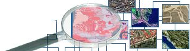

Vous trouverez sur ce site expérimental l’ensemble des jeux de données diffusés par le Grand Lyon (Communauté urbaine).
Entièrement basé sur des logiciels libres, il permet de Rechercher (panneau gauche), Découvrir (panneau central), Visualiser (panneau droit) les données géographiques ouvertes par le Grand Lyon.
|
Pour commencer, vous pouvez cliquer simplement sur « Rechercher »
pour consulter les données déjà disponibles. |
Pour plus d'information sur les données ou les pièces jointes, voir les contacts indiqués dans les fiches de métadonnées.
Merci de votre visite et n'hésitez-pas à revenir fréquemment car les jeux de données évoluent.
Nouveautés 
Réalisation BRGM - Site propulsé par
